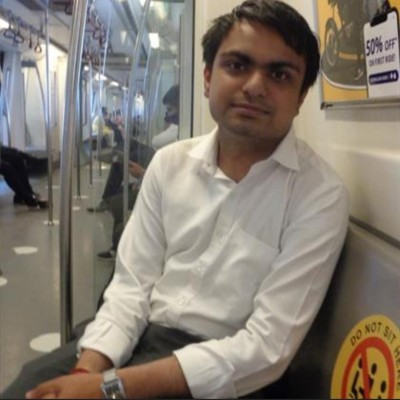

Amit Kumar Rai

Summary
I am Software Engineer with more than 1 year of experience including Backend Development and Cloud Security
Education
-
Bachelor of Engineering, Electrical Engineering - University of Delhi (2018-2022)
- Class XIIth, PCM + CS - DAV Public School, Narela, Delhi (2015-2017)
Work Experience
-
Software Engineer - Zuora Inc.
Jan 2023 - Present
- Working with InfraSec team to handle Entire Cloud security.
- Worked on automating repetetive manual tasks of SecOps Enginner.
-
Worked as on call duties by working on various security tools like lacework, Rapid7 Tcell, InsightVm, InsightIDR, AWS GuardDuty, AlertLogic.
-
Software Developement Engineer - OYO Rooms
Aug 2022 - Jan 2023
-
Worked in the Supply Tech team which handles the Onboarding of Property to OYO.
-
Handling of the issues and bugs by using the Kibana and APM monitoring tools and Knowledge of basic working of the deployments using Jenkins and Rundeck.
-
Worked on REST APIs, PostgreSQL for databases using the Data Grip integrated with IntelliJ at backend and various architectures set up for Infrastructure like AWS, RDS, Kubernetes.
-
Software Developement Engineer Intern - OYO Rooms
Jan 2022 - Aug 2022
-
Worked on the Frames Project which handles the images uploaded by patron while Onboarding of Property to OYO.
-
Done complete Unit testing of MicroService with code coverage more than 80% using Junit5 and Mockito.
- Integrated External APIs in Micro service using Feign Client.
- Configured CircleCi , Github Actions and SonarCube in Microservice.
Skills
- Programming Languages: Java(SpringBoot Framework), C, C++.
- Scripting : Python, Shell.
- Terraform for Infrastructure as Code.
- Computer Fundamentals : DBMS, Operating Systems, OOPs.
- Cloud : AWS, Azure.
-
Security Monitoring Tools : lacework, Rapid7 Tcell, InsightVm, InsightIDR, AWS GuardDuty, AlertLogic, Kibana.
Projects
-
Cloud Migration:
-
Developed a in house Java SDK that is used by all the teams of OYO to use both AWS S3 and Azure Blob and integrated this SDK into Microservices of Finance Tech Team.
-
Contributed in migration of K8s, MongoDB, Postgresql, ActiveMq, Redis and Kafka.
-
Frames Ruby To Java Migration:
-
Frames is a microservice that deals with images of hotels when patron wants to onboard his/her hotel to OYO.
- Worked on Engineering Excellence task to reducing Production Bugs.
-
System Health Check:
-
Worked on adding Enviroments variables , Readiness and Liveliness probe of Kubernates optimised these variables so that service starting time optimised.
-
Performed health check of the service to optimise pod CPU and memory usage, heap config and DB indexing..
Achivements
- Global Rank-127 in June Cookoff 2021 on Codechef.
- Rank 7 in GeekforGeeks Coding contest on 30-05-2021.
Other
Contact me
© Amit Kumar Rai. All rights reserved.